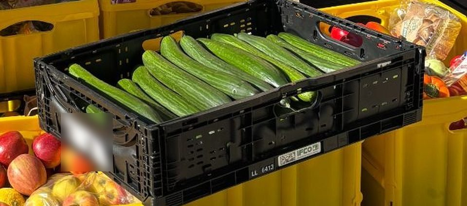
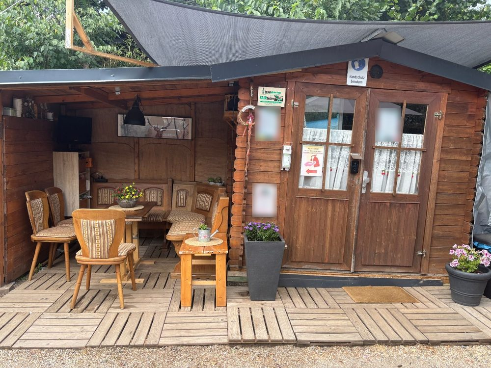

Die Tafel hat Vorrang
Wir kooperieren partnerschaftlich: Erst bedient die Tafel bedürftige Menschen, danach retten wir die verbleibenden Mengen.
Seit 2025 aktiv, als Verein seit August 2026 · Teil des bundesweiten foodsharing-Netzwerks
Die Tafel hat Vorrang. Wir holen ab, was übrig bleibt, kostenlos und ehrenamtlich.
Eingetragener Verein (Amtsgericht Friedberg, VR 3416)

Ergänzen statt ersetzen
foodsharing ersetzt die Tafel nicht, sondern ergänzt dort, wo Lebensmittel übrig bleiben.
Wir kooperieren partnerschaftlich: Erst bedient die Tafel bedürftige Menschen, danach retten wir die verbleibenden Mengen.
Auch kleinere Mengen und kurzfristig Übriges holen wir ab. Das spart Ihrem Betrieb Entsorgungsaufwand und Lebensmittelabfälle.
Ob planmäßige Abholung oder spontaner Überhang: Unser ehrenamtliches Team ist flexibel einsatzbereit.
Transparenter Ablauf
Ein unverbindliches Gespräch vor Ort oder digital, um Ihre Gegebenheiten und Abläufe abzustimmen.
Feste Tage und Uhrzeiten legen wir gemeinsam mit Ihnen fest, abgestimmt auf Ihre Filialzeiten.
Unsere Foodsaver:innen weisen sich bei jeder Abholung mit dem foodsharing-Ausweis aus und haben die Rechtsvereinbarung akzeptiert.
Wer wir sind
Rund 22
Foodsaver:innen im Einsatz, zusätzlich zur Gründerin des Bezirks
Rund 200
Menschen holen regelmäßig Lebensmittel an unseren Teilerhütten
2
Teilerhütten, in denen Lebensmittel zum Abholen bereitstehen
Stand Juli 2026, laut Zeitungsbericht „Essen vor dem Müll retten“ vom 25. Juli 2026.
„Die Arbeit von Frau Neuser nebst ihrem Team hat mich sehr beeindruckt. Was dort sechs Tage die Woche geleistet wird, mit viel persönlichem Einsatz und Herzblut, und das alles in ehrenamtlicher Arbeit.“
Häufige Fragen
Keine. Wir arbeiten ehrenamtlich, die Zusammenarbeit ist für Ihren Betrieb kostenlos.
Mit der foodsharing-Rechtsvereinbarung wird Ihr Betrieb von der Haftung für abgeholte Lebensmittel freigestellt. Abholen dürfen nur Foodsaver:innen, die diese Vereinbarung akzeptiert haben und sich mit ihrem Ausweis ausweisen. Alle Foodsaver:innen haben außerdem ein Hygienezertifikat.
Sie stellen uns bereit, was sonst weggeworfen würde. Abstimmung, Einteilung und Abholung übernimmt unser Team.
Das legen wir beim Kennenlernen gemeinsam mit Ihnen fest, passend zu Ihren Öffnungs- und Filialzeiten.
Für Privatpersonen
Engagieren Sie sich ehrenamtlich bei Rettungseinsätzen vor Ort in unserer Region.
Als Foodsaver:in mitmachen
Bei uns gibt es zwei Fairteiler. Der Zutritt zur Teilerhütte ist nur mit Anmeldung möglich, melden Sie sich dafür bei uns. Weitere Fairteiler in Ihrer Nähe zeigt die foodsharing-Karte.
Zutritt zur Teilerhütte anfragenWerden Sie Teil der regionalen Rettungskette. Schreiben Sie uns, wir melden uns bei Ihnen.
E-Mail: vereinsvorstand.niddatal@foodsharing.network
Aktiv in Niddatal, Wöllstadt, Reichelsheim, Echzell, Wölfersheim und Berstadt